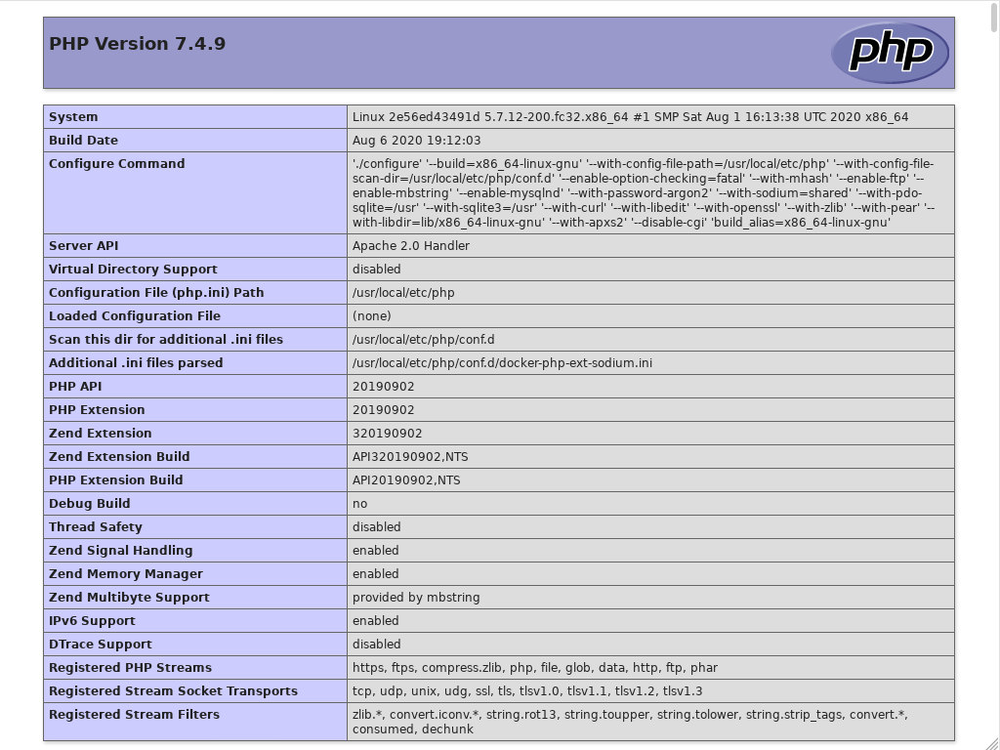
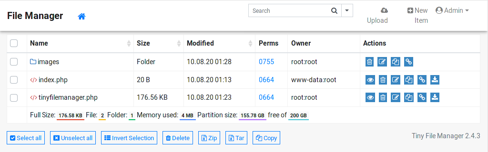
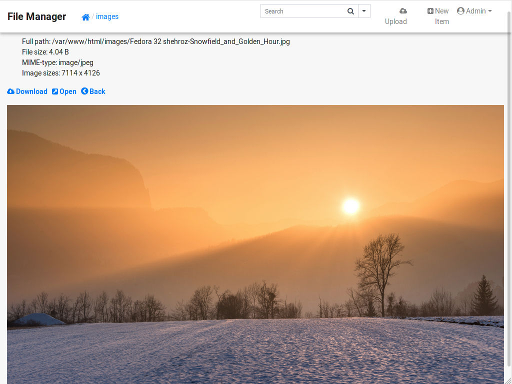

Podman básico: Contenedor con explorador de archivos web en PHP
Ahora probaremos crear un contenedor con el servidor web Apache y con PHP para ejecutar el explorador de archivos Tiny File Manager.
09 agosto 2020
En el anterior ejercicio se levantó un Contenedor con documentación de Python. Ahora probaremos crear un contenedor con el servidor web Apache y con PHP para ejecutar el explorador de archivos en navegador web Tiny File Manager.
Descargar la imagen con Apache y PHP versión 7
$ podman pull php:7-apache
$ podman images
Crear un directorio para este proyecto
$ mkdir podman-02-tinyfilemanager-php
$ cd podman-02-tinyfilemanager-php
Crear un archivo index.php con el informe de PHP
$ nano index.php
Con este contenido
<?php phpinfo(); ?>
Descargar Tiny File Manager versión 2.4.3.
$ wget -O tinyfilemanager-2.4.3.tar.gz https://github.com/prasathmani/tinyfilemanager/archive/2.4.3.tar.gz
Lo desempacamos
$ tar xf tinyfilemanager-2.4.3.tar.gz
Sólo necesitamos el archivo tinyfilemanager.php; lo copiamos al directorio actual
$ cp tinyfilemanager-2.4.3/tinyfilemanager.php .
Crear el archivo Dockerfile
$ nano Dockerfile
Con este contenido
FROM php:7-apache
# Ir al directorio raiz del servidor web
WORKDIR /var/www/html
# Copiar index.php y cambir su usuario a www-data
COPY index.php .
RUN chown www-data index.php
# Copiar Tiny File Manager
COPY tinyfilemanager.php .
# Crear directorio donde más adelante pondremos imágenes
RUN mkdir images
Crear la imagen
$ podman build -t tinyfilemanager:2.4.3 .
Arrancar el contenedor
$ podman run --rm -d -p 8080:80 --name tinyfilemanager tinyfilemanager:2.4.3
Ingresar en el navegador de internet para ver el reporte de PHP
http://127.0.0.1:8080/

Para probar Tiny File Manager use esta URL
http://127.0.0.1:8080/tinyfilemanager.php
Ingrese con usario admin y contraseña admin@123

Pruebe editar index.php desde Tiny File Manager, por ejemplo cambie a
<h1>Hola Mundo!</h1><?php phpinfo(); ?>
Parar el contenedor con
$ podman container stop tinyfilemanager
Montar el directorio Público de nuestro home (donde he copiado algunas imágenes) en images del contenedor
$ podman run --rm -d -p 8080:80 --name tinyfilemanager --volume ${HOME}/Público:/var/www/html/images:z tinyfilemanager:2.4.3
Note que se agrega "z" para que ajuste los permisos locales y sea visible dentro del contenedor.

Parar con
$ podman container stop tinyfilemanager
Navegue por la serie de ejercicios de Podman
- Contenedor con documentación de Python
- Contenedor con explorador de archivos web en PHP